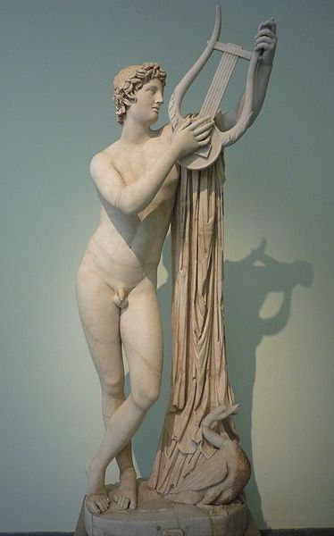
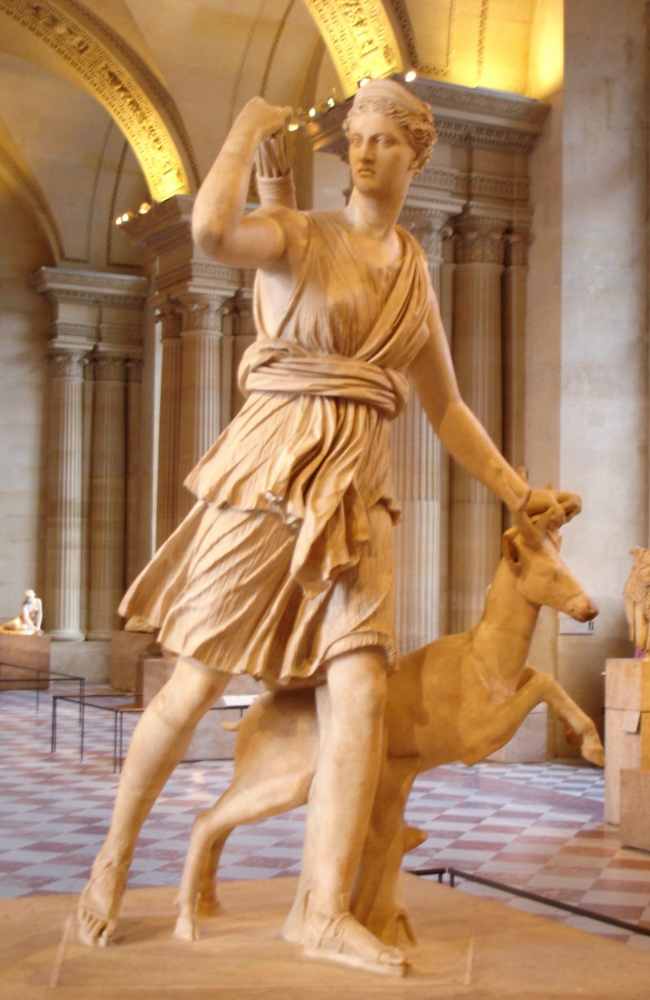
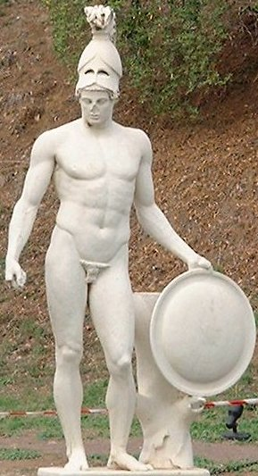
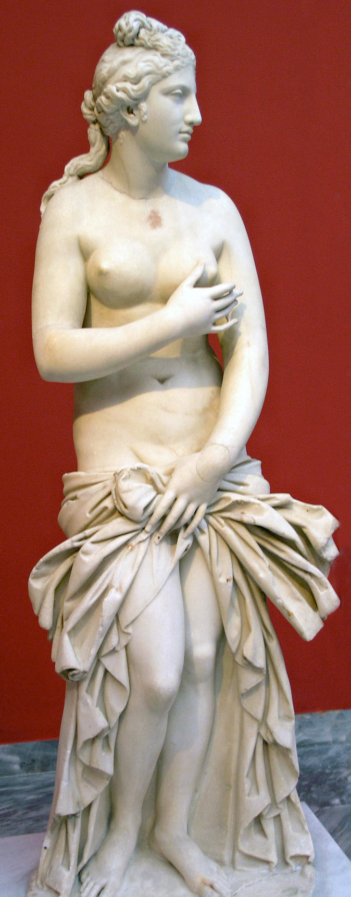
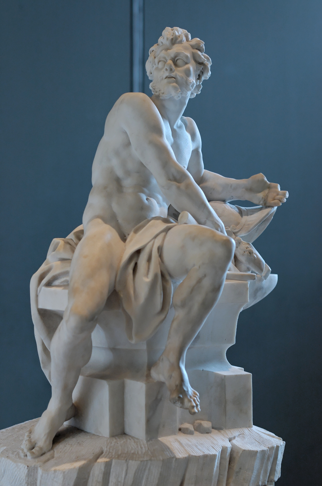
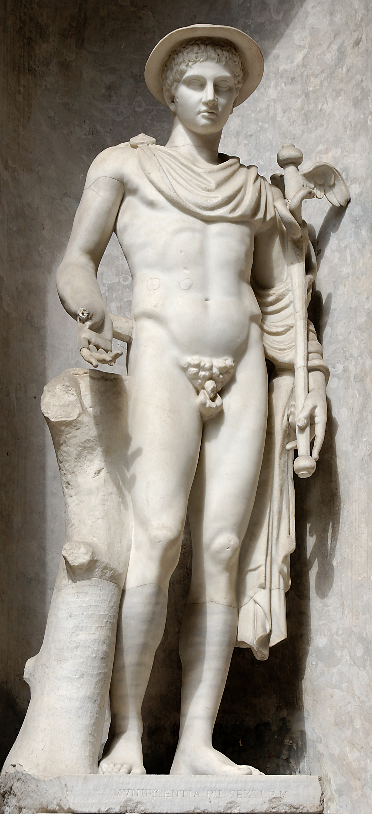
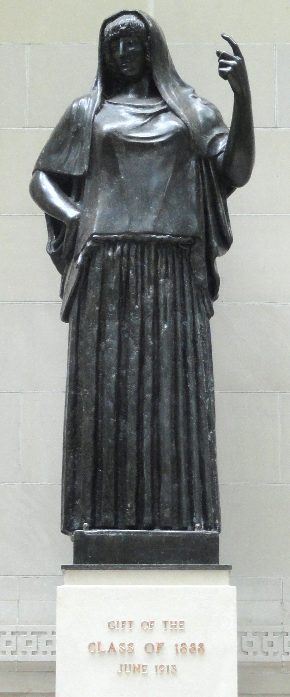

這是奧林匹斯十二主神
古希臘宗教中最受敬奉的十二位主要神衹
眾神之王宙斯

眾神之王，天空與雷霆之神。克羅諾斯和瑞亞幼子。赫拉的弟弟兼丈夫，儘管他有很多情人。亦是波賽頓和黑帝斯的弟弟。象徵包括霹靂、鷹、橡樹、節杖和天平。
天后赫拉

眾神之后，婚姻和家庭女神。克羅諾斯和瑞亞幼女。宙斯的姊姊兼妻子。作為婚姻女神，她經常報復宙斯的情人和他們的孩子。象徵包括孔雀、石榴、冠冕、杜鵑、獅子和牝牛
海神波賽頓

海洋、地震和海嘯之神。克羅諾斯和瑞亞次子。宙斯和黑帝斯的兄弟。配偶是安菲特里忒，像許多的希臘男性眾神一樣有很多情人。象徵包括馬、公牛、海豚和三叉戟。
農神狄蜜特

生育、農業、自然和季節女神。克羅諾斯和瑞亞次女。象徵包括罌粟、小麥、火炬和豬。由她的拉丁名Cĕrēs可衍生出「cereal穀物，糧食」一詞。
智神雅典娜

智慧、技藝、戰爭、戰略女神。宙斯和墨提斯的女兒。（在其他外史中提及她其實比宙斯更早出現）由於她父親害怕預言就吞下了她的母親，於是就在父親頭顱里完全成長，並在赫菲斯托斯劈開宙斯頭顱後全副武裝跳出來。象徵包括貓頭鷹、後蛇和橄欖樹。
太陽神阿波羅

光明、治癒、音樂、預言、射箭、太陽之神。宙斯和樂朵兒子，阿緹蜜絲的雙胞胎弟弟。他常常頭戴月桂樹枝做的桂冠，手持弓箭和箭袋或里拉琴。象徵包括太陽、里拉琴、烏鴉、海豚。
月神阿提密斯

純潔、藝術、知識、守護、治癒、月亮女神。宙斯和樂朵女兒，阿波羅的雙胞胎姐姐。在藝術作品中，她是一位身穿齊膝的'女神'，手持獵弓和箭袋的年輕絕美女子。象徵包括月亮、牝鹿、柏樹、天鵝。
戰神阿瑞斯

戰爭、暴力和血腥之神。象徵包括野豬、蛇、狗、禿鷲、矛和盾。宙斯和赫拉之子，其他神（阿芙羅黛蒂除外）都非常鄙視他。他的拉丁名Mars能衍生出「martial」（戰爭的；好戰的）」一詞。
愛神阿芙羅黛蒂

愛與美和欲望女神。一說是宙斯和狄俄涅之女，還有一說是從丟入海中的被克洛諾斯閹割的烏拉諾斯男根精血及海中泛起的泡沫混合之中誕生[B]。配偶為赫菲斯托斯，她的情人是阿瑞斯。象徵包括鴿子、鳥、蘋果、蜜蜂、天鵝、番石榴和玫瑰。"aphrodisiac（媚藥）"即來自她的名字，而她的拉丁名Vĕnus能衍生出 "venereal（性交、性病）"一詞。
火神與工匠神赫菲斯托斯

工匠、火和鍛造之神。希拉的長子，和宙斯結合或單獨生出。配偶為阿芙羅黛蒂，雖算不上最好的丈夫，然而他對於婚姻卻非常忠貞。象徵包括火、砧、斧頭、驢、錘子、火鉗和鵪鶉。「volcano（火山）」一詞即來自他的拉丁名Vulcānus。
神使荷米斯

傳令神（眾神之使者）兼冥界引導者，旅行、盜竊、體育、道路交叉邊界之神，商業之神（羅馬神話）。宙斯和邁亞之子。在奧林帕斯神只比戴歐尼修斯年長。符號包括手杖（雙蛇纏繞的商神杖）、翼鞋、翼盔、鸛和龜（他用龜甲發明了豎琴）。
灶神與家神赫斯緹雅

灶火、正序家務和家庭女神，首代奧林帕斯神兼原十二神之一，直到她為保安寧將神位讓與戴歐尼修斯，她是眾神中最慷慨和溫和的。克羅諾斯和雷亞長女，狄蜜特、希拉、黑帝斯、波賽頓和宙斯的大姐，也是最年長的奧林帕斯神，象徵是火炬。
奧林匹斯十二主神